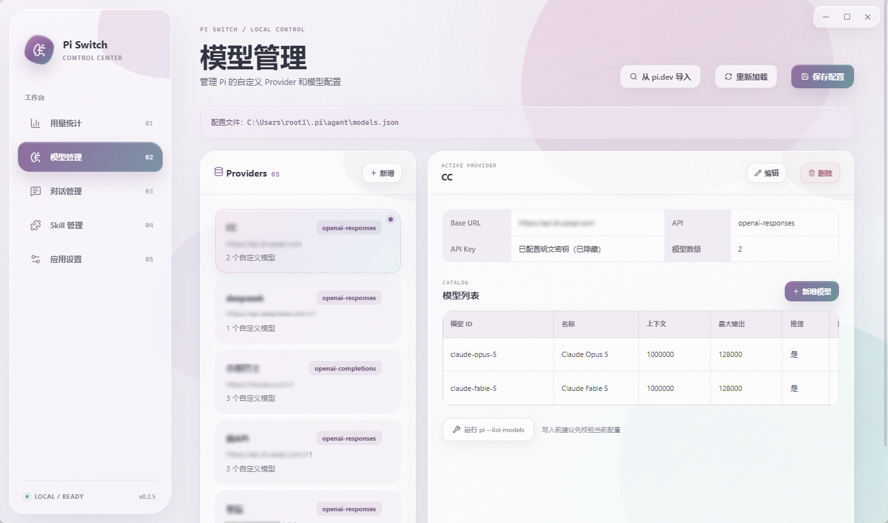
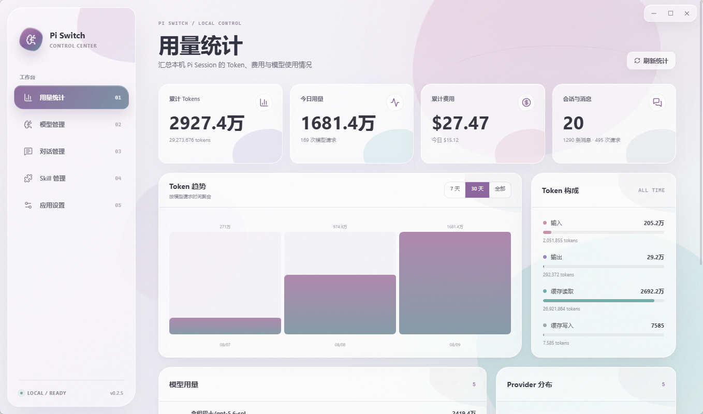
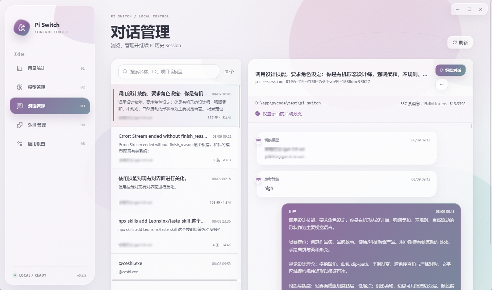
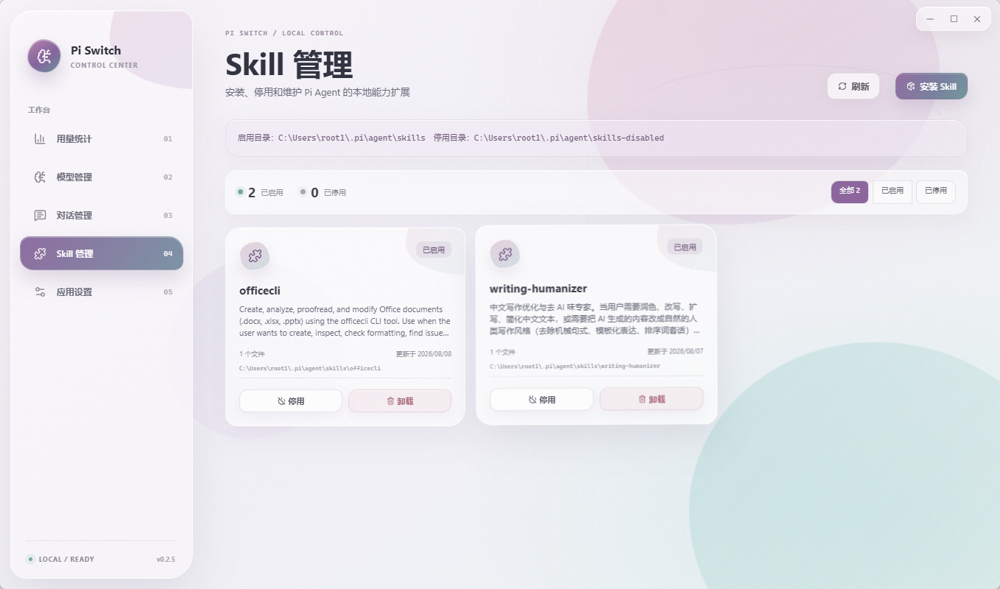

Pi Coding Agent 的本地控制面
MODELSESSIONSKILLUSAGE
ONE QUIET PLACE
复杂的开发上下文，
复杂的开发上下文，
慢慢展开。
Pi Switch 把散落在本地目录里的配置与记录，整理成可以反复使用的工作面。


LOCAL FIRST
你的配置与对话，
你的配置与对话，
留在本地。
Pi Switch 直接读取 Pi 的本地目录，不建立账户，也不上传 Session。API Key 推荐使用环境变量引用，明文密钥在界面中默认隐藏。
所有权
在你手上
让你的 Pi 有一个安静的控制面。
下载 Windows x64 安装版或便携版。需要先安装 Pi Coding Agent。
Windows 10/11 · x64 · WebView2